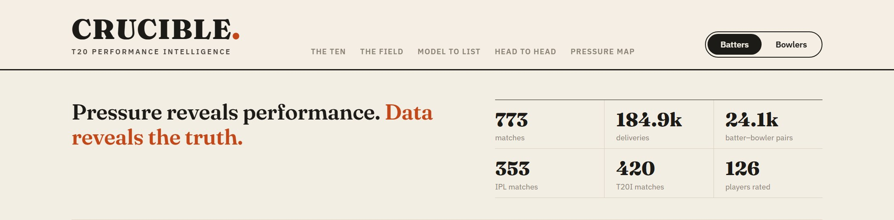
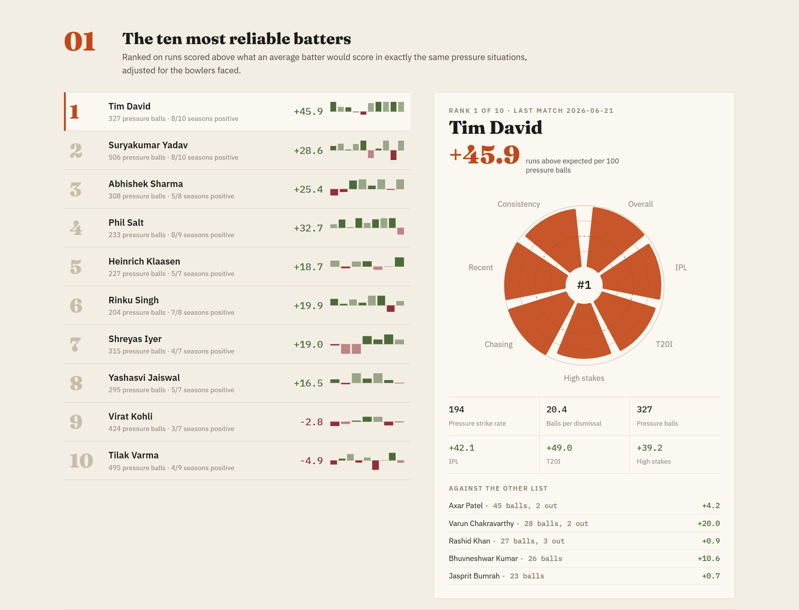
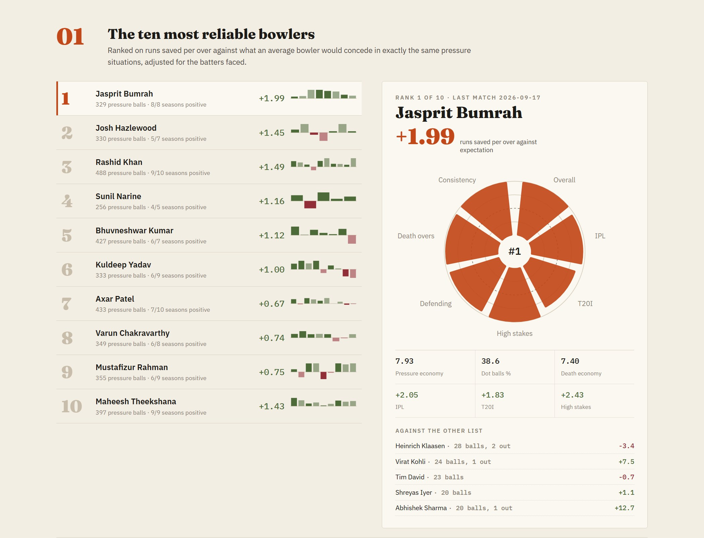
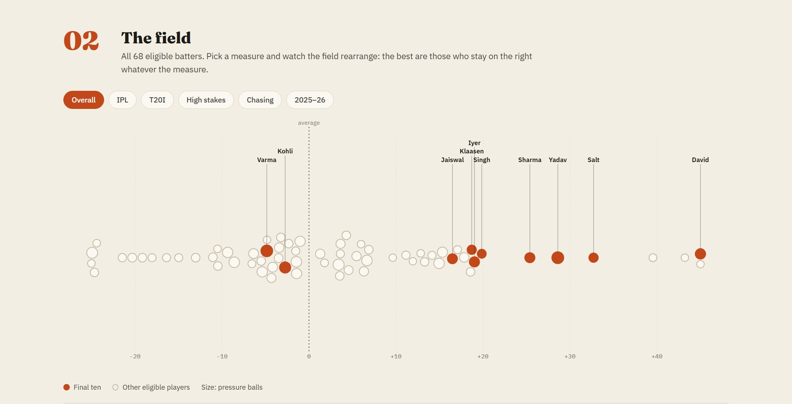
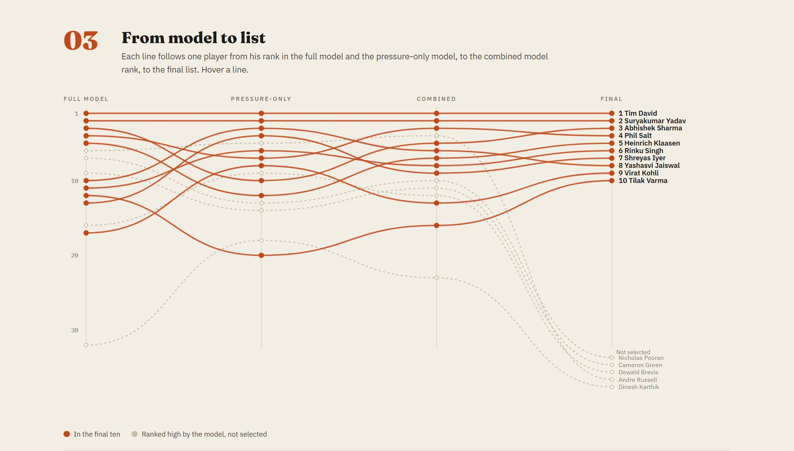
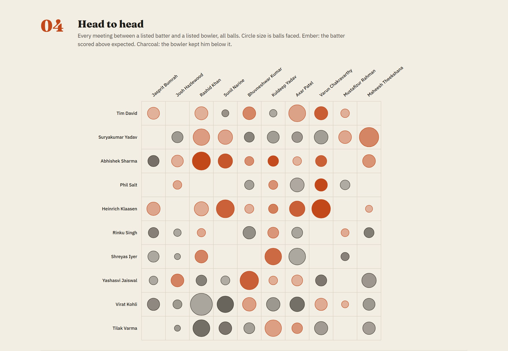
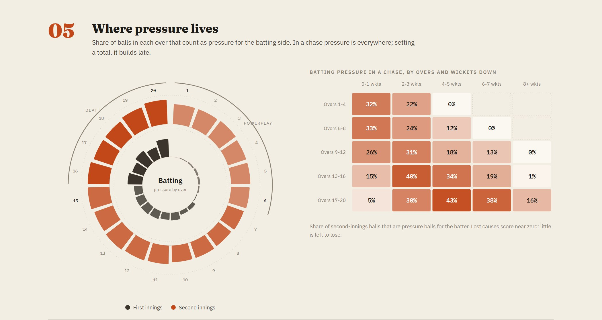
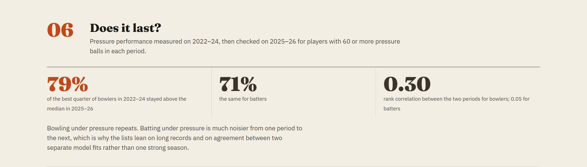
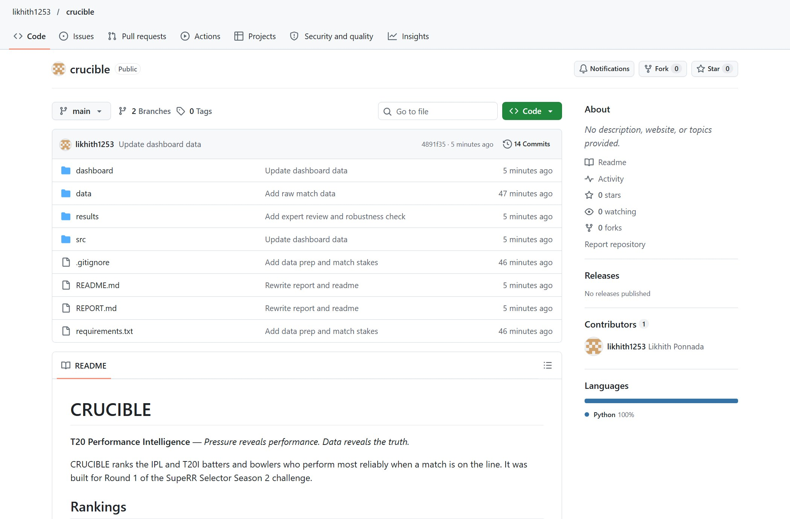

| 1 | Tim David |
| 2 | Suryakumar Yadav |
| 3 | Abhishek Sharma |
| 4 | Phil Salt |
| 5 | Heinrich Klaasen |
| 6 | Rinku Singh |
| 7 | Shreyas Iyer |
| 8 | Yashasvi Jaiswal |
| 9 | Virat Kohli |
| 10 | Tilak Varma |
| 1 | Jasprit Bumrah |
| 2 | Josh Hazlewood |
| 3 | Rashid Khan |
| 4 | Sunil Narine |
| 5 | Bhuvneshwar Kumar |
| 6 | Kuldeep Yadav |
| 7 | Axar Patel |
| 8 | Varun Chakravarthy |
| 9 | Mustafizur Rahman |
| 10 | Maheesh Theekshana |
CRUCIBLE identifies the batters and bowlers who perform most reliably in high-pressure moments of IPL and T20I cricket. Each player is measured against his own usual level and against everyone else who faced the same situations.
| Matches analysed | 773 (353 IPL, 420 T20I) |
| Deliveries | 184,930 (177,037 legal balls, 7,893 wides and no-balls) |
| Period | 22 January 2022 – 1 November 2026 |
| Batters / bowlers appearing | 816 / 589 |
| Distinct batter–bowler pairs | 24,054 |
From the supplied 200,999 delivery rows in 883 listed matches, the following were removed:
Run and wicket totals reconcile with the recorded results for 383 of 385 run margins and 388 of 389 wicket margins.
Pressure is a property of the ball, fixed before it is bowled. The same ball is a pressure ball whether it goes for six or takes a wicket, so no player can create pressure balls by playing badly.
The win-probability and outcome models give the probability of every possible result of the next ball and the win probability that would follow each one. The downside of a ball for a side is the expected fall in that side's win probability, counting only the results that hurt it. It is computed separately for each side:
| Match type | Stake |
|---|---|
| IPL league match | Change in the team's top-four probability between winning and losing, from 3,000 simulations of the remaining fixtures |
| IPL Qualifier 1, Eliminator | 0.5 |
| IPL Qualifier 2, Final; other knockouts | 1.0 |
| T20I bilateral match | Change in the probability of winning the series, given the series score |
| Multi-team T20I event | Group and Super-4 stages simulated like the IPL league |
A league match with a stake of 0.3 or more is a virtual knockout: the season turns on it. Virtual and real knockouts together form the high-stakes matches. 55% of bowling pressure balls fall in high-stakes matches.
Four gradient-boosted models describe the situation, not the players. No batter or bowler identity is used. Each match's predictions come from models trained without that match (5-fold cross-fitting by match), so no ball is scored by a model that has seen it.
| Model | Predicts | Inputs |
|---|---|---|
| Win probability, 1st innings | Batting side wins | Score, wickets, balls used |
| Win probability, 2nd innings | Batting side wins | Runs needed, balls left, wickets, required rate |
| Ball outcome | 0, 1, 2, 3, 4, 6, wicket, run-out, extra | Over, wickets, competition, innings, ball in over, runs needed, required rate, batting positions and balls faced, recent wickets, partnership balls, pace or spin |
| Remaining runs | Runs still to come | Balls used, wickets, competition, batting positions, balls faced |
The inputs contain no runs already scored by the batters at the crease. Otherwise a batter in form would be judged against a bar raised by his own earlier boundaries.
| Component of a ball's value | Definition | Credited to |
|---|---|---|
| Scoring | Runs off the bat minus expected runs | Batter (+), bowler (−) |
| Dismissal | Expected rest-of-innings runs after a dot ball minus after a wicket, both measured after the ball | Bowler (bowler-credited dismissals only) |
| Extras | Wide and no-ball runs minus expectation | Bowler |
Raw "runs above expected" still flatters a batter who faced weak bowling. CRUCIBLE therefore fits every batter and every bowler jointly over the network of matchups, so each player's rating is relative to the opponents he actually met.
| Component | Form |
|---|---|
| Scoring | runs = expected + batter effect − bowler effect + match effect; each player's effect can change as pressure rises |
| Dismissal | Same structure on the log-odds of a bowler-credited wicket |
| Extras | Bowler-only effect on wide and no-ball runs |
| Competition-season levels | A separate baseline for every season of the IPL and of T20Is; the IPL–T20I strength gap is estimated, not assumed |
| Match effects | Pitch and conditions on the day |
| Partial pooling | Player effects share a common distribution; small samples are pulled towards the average |
Estimation used approximate restricted maximum likelihood (EM with a Laplace approximation). Every fit ran until parameters changed by less than 10⁻⁴. Ratings are evaluated on a common set of 2,000 real pressure situations, and players are ranked by the cautious 10th percentile of their posterior rating.
Two fits are run:
The model ranking averages a player's rank in the two fits.
| Requirement | Batters | Bowlers |
|---|---|---|
| Effective pressure evidence (pressure-weighted, match-clustered) | ≥ 15 | ≥ 25 |
| Pressure balls | ≥ 100 | ≥ 100 |
| Seasons with pressure balls · different opponents | ≥ 2 · ≥ 5 | ≥ 2 · ≥ 5 |
| Effective IPL pressure evidence · IPL share of evidence | ≥ 5 · ≥ 1/3 | ≥ 8.3 · ≥ 1/3 |
| T20 played in the 12 months to 1 Nov 2026 | Yes | Yes |
68 batters and 58 bowlers meet the evidence requirements. The full audit is in results/eligibility_audit.csv.
The model ranking was reviewed against each player's detailed evidence:
Each adjustment is recorded with its evidence in src/select_final.py.
| Adjustment | Model rank | Evidence |
|---|---|---|
| Andre Russell not ranked | 4 | No T20 since July 2025. |
| Nicholas Pooran not ranked | 10 | 17.6 runs per 100 pressure balls below expected in T20Is, over 197 balls. |
| Cameron Green not ranked | 11 | Below expected in T20Is (−3.5 per 100) and in high-stakes matches (−1.4). |
| Dewald Brevis not ranked | 12 | 106 pressure balls: too little evidence. |
| Abhishek Sharma placed 3rd | 5 | +49.8 per 100 in high-stakes matches (Salt +11.2) on 308 pressure balls; second only to Suryakumar Yadav on match-winning performances. |
| Yashasvi Jaiswal placed 8th | 6 | T20I figure rests on 37 pressure balls; IPL record (+10.8 per 100) is the weakest of the top eight. |
| Virat Kohli ranked 9th | 13 | Hardest batter to dismiss under pressure (one dismissal every 47 pressure balls) over 424 balls; 8th in the pressure-only model; top ten in four of five methods. |
| Tilak Varma ranked 10th | 16 | Heaviest pressure workload of any eligible batter (495 balls, 266 in high-stakes matches, where he is above expected). |
| Jasprit Bumrah placed 1st | 3 | Top three tied in the model. Best runs-saved rate (1.99 per over), best high-stakes record (2.43), positive in every season, best death economy of any eligible pace bowler (7.40). |
| Wanindu Hasaranga not ranked | 10 | +0.06 runs saved per over in T20Is; no IPL in the latest season. |
| Krunal Pandya not ranked | 11 | No T20I pressure record; death economy 10.48. |
| Maheesh Theekshana ranked 10th | 16 | Saved runs in all 9 season blocks: +1.56 IPL, +1.37 T20I, +1.54 in high-stakes matches; 3rd on the reliability index. |
Each method below is a single fixed rule applied to every available eligible player:
| Batter | Model | Rel. | WPA | Win | P+O | Top 10 |
|---|---|---|---|---|---|---|
| Tim David | 1 | 2 | 1 | 11 | 5 | 4/5 |
| Suryakumar Yadav | 2 | 2 | 2 | 1 | 1 | 5/5 |
| Abhishek Sharma | 4 | 8 | 25 | 2 | 2 | 4/5 |
| Phil Salt | 3 | 6 | 18 | 8 | 3 | 4/5 |
| Heinrich Klaasen | 6 | 11 | 30 | 25 | 15 | 1/5 |
| Rinku Singh | 7 | 4 | 3 | 22 | 13 | 3/5 |
| Shreyas Iyer | 8 | 5 | 4 | 3 | 3 | 5/5 |
| Yashasvi Jaiswal | 5 | 1 | 9 | 14 | 8 | 4/5 |
| Virat Kohli | 12 | 7 | 8 | 6 | 6 | 4/5 |
| Tilak Varma | 15 | 9 | 16 | 9 | 11 | 2/5 |
| Bowler | Model | Rel. | WPA | Win | P+O | Top 10 |
|---|---|---|---|---|---|---|
| Jasprit Bumrah | 3 | 2 | 10 | 14 | 8 | 4/5 |
| Josh Hazlewood | 1 | 4 | 1 | 2 | 1 | 5/5 |
| Rashid Khan | 2 | 1 | 2 | 1 | 1 | 5/5 |
| Sunil Narine | 4 | 8 | 9 | 27 | 12 | 3/5 |
| Bhuvneshwar Kumar | 5 | 5 | 18 | 8 | 5 | 4/5 |
| Kuldeep Yadav | 6 | 7 | 6 | 5 | 4 | 5/5 |
| Axar Patel | 7 | 6 | 5 | 3 | 3 | 5/5 |
| Varun Chakravarthy | 8 | 9 | 3 | 19 | 11 | 3/5 |
| Mustafizur Rahman | 9 | 10 | 21 | 7 | 6 | 4/5 |
| Maheesh Theekshana | 16 | 3 | 19 | 24 | 16 | 1/5 |
Seven batters and seven bowlers on the final lists are top ten under at least four of the five methods. Where methods disagree, the reason is visible:
| # | Player | Balls | SR | Balls/out | Overall | IPL | T20I | High-stakes | Seasons + |
|---|---|---|---|---|---|---|---|---|---|
| 1 | Tim David | 327 | 194 | 20.4 | +45.9 | +42.1 | +49.0 | +39.2 | 8/10 |
| 2 | Suryakumar Yadav | 506 | 180 | 18.7 | +28.6 | +13.8 | +43.5 | +27.2 | 8/10 |
| 3 | Abhishek Sharma | 308 | 169 | 15.4 | +25.4 | −3.2 | +78.3 | +49.8 | 5/8 |
| 4 | Phil Salt | 233 | 175 | 19.4 | +32.7 | +54.6 | +18.9 | +11.2 | 8/9 |
| 5 | Heinrich Klaasen | 227 | 166 | 16.2 | +18.7 | +18.8 | +18.5 | +18.9 | 5/7 |
| 6 | Rinku Singh | 204 | 175 | 29.1 | +19.8 | +10.5 | +46.4 | +58.7 | 7/8 |
| 7 | Shreyas Iyer | 315 | 167 | 31.5 | +19.0 | +26.6 | −1.8 | +12.9 | 4/7 |
| 8 | Yashasvi Jaiswal | 295 | 161 | 32.8 | +16.5 | +10.8 | +56.5 | +40.4 | 5/7 |
| 9 | Virat Kohli | 424 | 150 | 47.1 | −2.8 | −1.4 | −7.3 | −0.2 | 3/7 |
| 10 | Tilak Varma | 495 | 141 | 26.1 | −4.9 | −10.8 | +0.7 | +2.4 | 4/9 |
Kohli and Tilak are placed on dependability and workload. They score close to expectation, rarely get out, and carry the heaviest pressure loads in the data.
| # | Player | Balls | Econ | Saved | IPL | T20I | High-stakes | Death econ | Seasons + |
|---|---|---|---|---|---|---|---|---|---|
| 1 | Jasprit Bumrah | 329 | 7.93 | 1.99 | 2.05 | 1.83 | 2.43 | 7.40 | 8/8 |
| 2 | Josh Hazlewood | 330 | 8.36 | 1.45 | 0.60 | 3.00 | 1.05 | 9.85 | 5/7 |
| 3 | Rashid Khan | 488 | 7.30 | 1.49 | 1.26 | 1.86 | 1.39 | 8.41 | 9/10 |
| 4 | Sunil Narine | 256 | 7.59 | 1.16 | 1.16 | – | – | 6.12 | 4/5 |
| 5 | Bhuvneshwar Kumar | 427 | 9.08 | 1.12 | 1.74 | −0.51 | 0.36 | 10.09 | 6/7 |
| 6 | Kuldeep Yadav | 333 | 7.98 | 1.00 | 1.59 | −0.38 | 0.53 | 8.45 | 6/9 |
| 7 | Axar Patel | 433 | 8.00 | 0.67 | 0.82 | 0.53 | 0.11 | 9.15 | 7/10 |
| 8 | Varun Chakravarthy | 349 | 7.82 | 0.74 | 1.35 | −0.61 | −0.28 | 8.55 | 6/8 |
| 9 | Mustafizur Rahman | 355 | 9.26 | 0.75 | 0.54 | 0.85 | 0.81 | 8.91 | 6/9 |
| 10 | Maheesh Theekshana | 397 | 7.59 | 1.43 | 1.56 | 1.37 | 1.54 | 8.22 | 9/9 |
Pressure performance was measured on 2022–24 and compared with 2025–26, for players with 60 or more pressure balls in each period.
Bowling under pressure repeats, and batting is noisier. That is why the method relies on long records, partial pooling, two fits and a cross-method check. From about fifth place onwards, neighbouring positions should be read as a band rather than a strict order.
The dashboard is live at https://likhith1253.github.io/crucible/. It is a single static page built with D3, with a Batters/Bowlers switch at the top that drives every section. The screenshots below are taken from the live build.








Everything needed is in the public repository: the supplied data, the pipeline and every output. The steps below rebuild the results from the raw files.

data/ (supplied files), src/ (pipeline), results/ (all rankings and evidence), dashboard/ (site source), REPORT.md.Python 3.10 or later with numpy, pandas, pyarrow, scipy, scikit-learn and PyTorch (versions pinned in requirements.txt). A CUDA GPU is optional and speeds up the joint-model fit.
$ git clone https://github.com/likhith1253/crucible.git $ cd crucible $ pip install -r requirements.txt
work/)
$ python src/s1_data.py $ python src/s1b_stakes.py
$ python src/s2_models.pyresults/eligibility_audit.csv; the slowest step, and it uses a GPU if one is present
$ python src/s5_main.pyresults/model_full/, results/model_pressure_only/
$ python src/quick_final.py $ python src/pressure_only.py
results/final_*.csv, results/evidence_*.csv, results/method_comparison_*.csv, dashboard/data.js
$ python src/select_final.py $ python src/evidence.py $ python src/robustness.py
dashboard/index.html in a browser, or serve it locally
$ python -m http.server 8000 -d dashboard # then visit http://localhost:8000
Running select_final.py prints the final lists with each player's model ranks:
$ python src/select_final.py
rank name model_rank full_model_rank pressure_only_rank
1 Tim David 1 1.0 1.0
2 Suryakumar Yadav 2 2.0 2.0
3 Abhishek Sharma 5 3.0 10.0
4 Phil Salt 3 4.0 7.0
5 Heinrich Klaasen 7 5.0 12.0
6 Rinku Singh 8 11.0 6.0
7 Shreyas Iyer 9 13.0 4.0
8 Yashasvi Jaiswal 6 10.0 3.0
9 Virat Kohli 13 17.0 8.0
10 Namboori Tilak Varma 16 12.0 20.0
rank name model_rank full_model_rank pressure_only_rank
1 Jasprit Bumrah 3 4.0 4.0
2 Josh Hazlewood 1 2.0 2.0
3 Rashid Khan 2 3.0 1.0
4 Sunil Narine 4 1.0 8.0
5 Bhuvneshwar Kumar 5 6.0 3.0
6 Kuldeep Yadav 6 5.0 6.0
7 Axar Patel 7 8.0 7.0
8 Varun Chakravarthy 8 10.0 5.0
9 Mustafizur Rahman 9 7.0 12.0
10 Maheesh Theekshana 16 24.0 10.0
robustness.py ends by listing the players who are top ten under at least four of the five methods:
$ python src/robustness.py
...
core (top 10 in >= 4 of 5 methods): ['Tim David', 'Suryakumar Yadav', 'Abhishek Sharma', 'Phil Salt',
'Shreyas Iyer', 'Yashasvi Jaiswal', 'Virat Kohli']
...
core (top 10 in >= 4 of 5 methods): ['Jasprit Bumrah', 'Josh Hazlewood', 'Rashid Khan', 'Bhuvneshwar Kumar',
'Kuldeep Yadav', 'Axar Patel', 'Mustafizur Rahman', 'Wanindu Hasaranga']
| File | Contents |
|---|---|
results/final_batters.csv, final_bowlers.csv | Final top ten with model ranks and the basis for each placement |
results/model_ranking_*.csv | Model ranking of every eligible player, with availability |
results/evidence_*.csv | Pressure evidence for every eligible player: IPL, T20I, high-stakes, chases or defending, recent form, consistency |
results/method_comparison_*.csv | Ranks under all five methods |
results/eligibility_audit.csv | Every candidate, the evidence measures and the reason for any exclusion |
results/out_of_time_check.json, data_integrity.json | Stability check and data audit |
| Typical approach | CRUCIBLE | |
|---|---|---|
| Pressure | Weighted formula of required rate, wickets, phase | Expected loss of win probability on the ball |
| Match importance | Flat playoff bonus | Season simulation; virtual knockouts |
| Batting vs bowling | One shared score | Separate measure for each side |
| Opposition | Ignored | Joint model over 24,054 matchups |
| IPL vs T20I | Fixed weights | Competition-season levels estimated from data |
| Robustness | One formula | Two fits, evidence review, five-method comparison |
All random steps use the fixed seed 20260718. The joint model, the stakes simulation and the cross-fitting are deterministic given that seed.